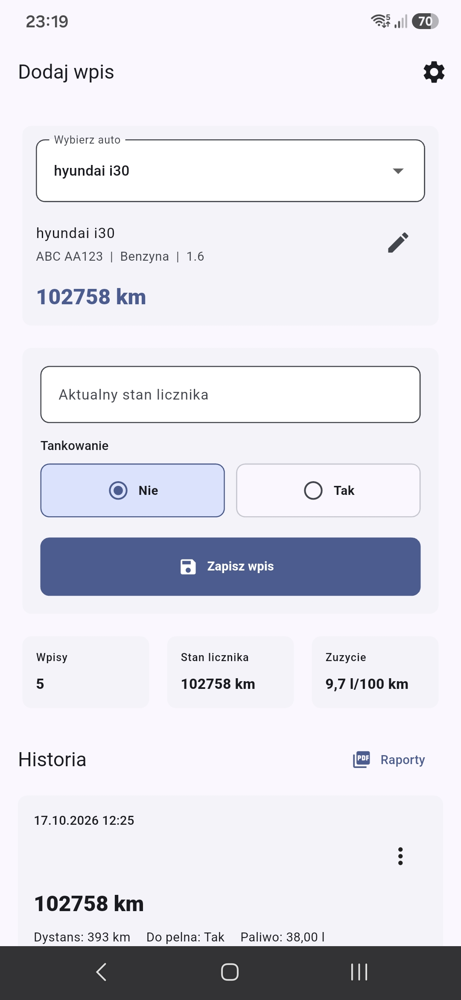
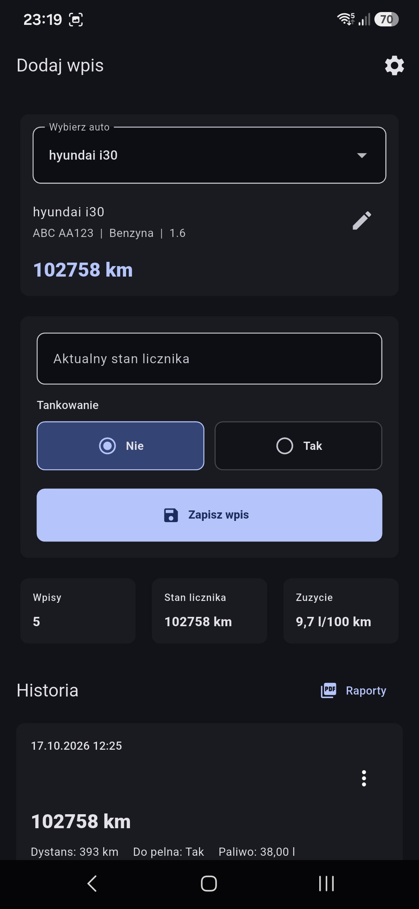
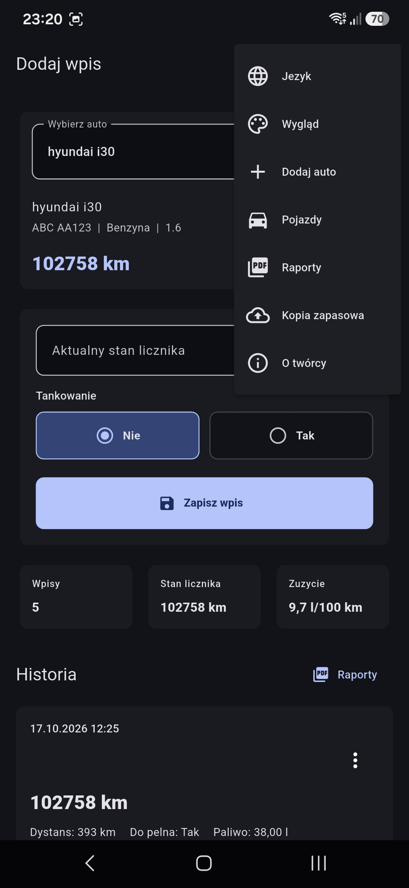
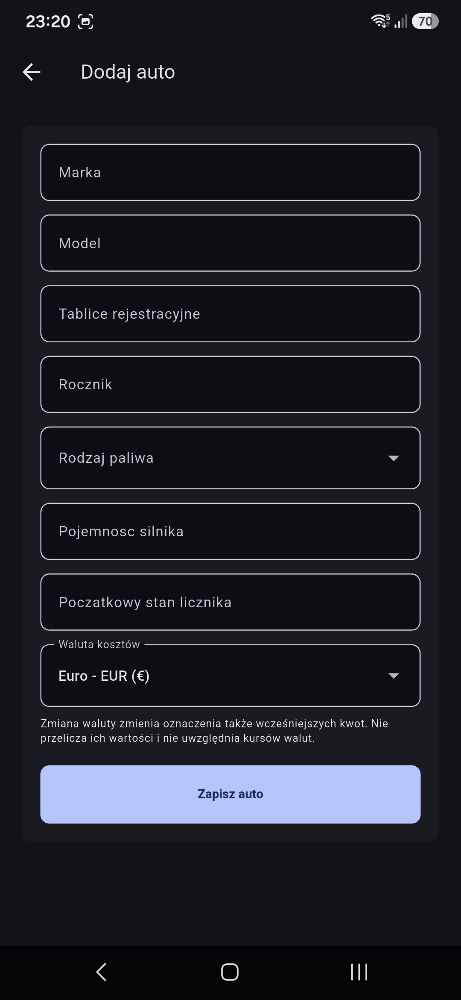
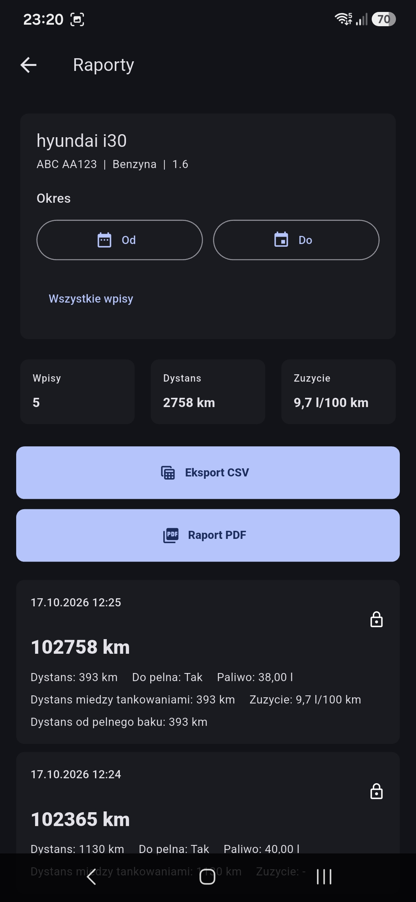
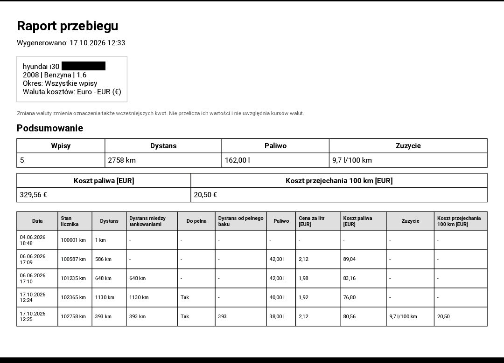

Nowy rozdział MTElektronik
Wizytówka autora, projekty i miejsce na kolejne notatki.
Czytaj wpisMARCIN TCHORZ / MTELEKTRONIK
Mam na imię Marcin. Tu rozwijam MTElektronik — pokazuję swoje projekty, tworzę aplikacje i dzielę się notatkami z pracy nad nimi.
DZIENNIK PROJEKTÓW
Wpisy o pomysłach, pracy nad projektami i kolejnych krokach. Artykuły publikuję po polsku.
Wizytówka autora, projekty i miejsce na kolejne notatki.
Czytaj wpisOD POMYSŁU DO APLIKACJI
Zapisuj stany licznika, tankowania i ładowania pojazdów. Przeglądaj historię, obliczaj spalanie i sprawdzaj koszty w raportach PDF oraz CSV. Aplikacja działa offline, bez konta, reklam i GPS.
Chcesz wypróbować aplikację przed jej premierą i pomóc w jej rozwoju? Zgłoś chęć udziału w testach zamkniętych, pisząc na adres marcintelektro@gmail.com. Twoje uwagi i sugestie pomogą nam dopracować aplikację przed publikacją w Google Play.
Rzeczywiste ekrany aplikacji w polskiej wersji językowej. Kliknij obraz, aby otworzyć go w pełnym rozmiarze.






ZA PROJEKTAMI
Marcin Tchorz — autor MTElektronik.
Tworzę praktyczne aplikacje na Androida. Na tej stronie łączę informacje o nich z blogiem, na którym jest miejsce na szerszy opis pomysłów i pracy nad projektami.
Mój profil na GitHubie ↗POROZMAWIAJMY
Masz pytanie o projekt lub pomysł na wpis? Napisz do mnie.
Znajdziesz mnie również na GitHubie ↗